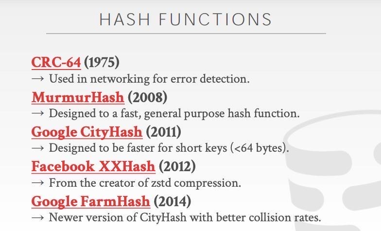

CMU DB: Hash Index
关于HashFunction选择，选择XXHash和FarmHash基本上没有啥问题

静态Hash Table是大小固定不变，而动态Hash Table则会随着时间对大小做调整。不过实际工程中，静态hash table也会不断地判断load factor来进行扩表，至于是不是有缩表这个还不太确定，理论上也是可行的。
静态Hash Table有下面几种：
- linear probe hashing. 如果bucket上有冲突就找下一个bucket.
- robin hood hashing. 会判断该key到bucket的偏移，尽可能地让偏移均匀
- cuckoo hashing. 会维护多个 hash table来减少冲突 https://github.com/efficient/libcuckoo
动态Hash Table有下面几种：
- chained hashing. 每个bucket下面是个链表来解决冲突
- extensible hashing. 对hash的头部X个bits进行bucket划分，如果冲突过大的话选择对X+1 bits进行rebalance.
- linear hashing. 相比上面的拆分方式，这个方式更加平滑，每次只针对一个bucket分裂。这是个很有意思的实现。